Maturity
A term used in the ceramics industry to signify the degree of vitrification in a fired clay. Mature clays are dense and strong, immature ones porous and weak.
Key phrases linking here: maturity, mature - Learn more
Details
A term referring to the degree to which a clay or glaze has vitrified or sintered during the firing. Implicit in this understanding is that maturity relates to the intended use, the same body (or glaze or enamel) may be mature in one application but not in another. A 'mature' stoneware or porcelain clay is normally one that is simply dense and strong. A mature bone china is fired as high as possible while still having a porcelain microstructure (and not glass), thus producing translucency with porcelain properties. For some applications, e.g. terra cotta, the concept of maturity is not really considered, minimal cost-of-production takes precedence over functional factors. One basic example of maturity concept for functional ware used by potters is simply: Dense enough to resist soaking up water. For commercial clay bodies "mature" often means fired high enough to achieve needed strength and density but low enough to prevent fired warpage (e.g. the Sanitaryware industry). In the case of wall tile, "mature" might mean: Fired high enough to get adequate strength but low enough to minimize firing shrinkage. Every clay has an ideal range (often quite narrow) to which it should be fired to develop the maximum maturity needed for a specific application. An interesting example of maturity is for red-burning stonewares: Low enough to develop the red color at an adequate margin for over-firing that produces brown - such bodies are used at the density that this aesthetic produces.
Some technicians believe that chemistry is an indicator of body maturity, however, caution is needed with this approach. Chemistry is generally for glazes, they melt. Body maturity is about physics, materials, mineralogies, firing procedures, etc. Maturity can be measured by its physical indicators (fired shrinkage, porosity, fired strength, fired appearance). Our SHAB test is a good example of a procedure to measure body fired maturity.
Some authors and educators relate fired maturity to the packing density of particles in the dried matrix (controlling this by feeding particle size and shape information provided by material manufacturers into mathematical constructs). However, this diverts attention from the key factor that creates the vitreous strength: Incipient fusion. This happens microscopically surrounding the sites of early-melting particles and their gradual ability to bring others into solution. Vitreous fired ceramic microstructure is normally a mesh of aggregate particles (silica, grog, etc), crystals grown during firing (mullite) and a glass (from feldspar, fluxes) that glues it all together. The strength of the ceramic is a function of the degree to which the kiln created this vitrified microstructure (the packing of particles in the dried state is irrelevant).
Maturity can also be seen as a process, one that may occur across a wide or narrow range of temperatures. As a clay body matures its increasing shrinkage and diminishing porosity can be plotted on a graph (as percentages). The fired shrinkage curve rises to a maximum (usually below 15%), levels off, and then begins dropping. The porosity curve does the opposite (often down to zero). The point at which the curves reverse direction is where the body is beginning to swell and melt. A body fired to a point within the leveled-off sections could be susceptible to problems (e.g. when variations occur in body material properties). These curves can be moved rightward by adding silica to the body recipe (or trading the main clay for more refractory ones). The curves can be moved leftward by adding feldspar (or other fluxes). The level section of the curve is narrow for terra cotta bodies, wide for porcelains. Controlling and tuning body maturity should be done by firing plenty of test bars for each body recipe change made.
Glazes can also be described using this term. A 'mature' glaze has been fired high enough and held at that temperature long enough such that its melt flows well (but not too much), heals imperfections and provides a good covering. It cools to a hard, durable surface that is resistant to leaching. Firing that same glaze to a lower or higher temperature would compromise these properties.
Like the term 'vitrified', the term 'mature' needs to be taken in context. A mature sintered refractory, for example, can be quite porous, yet it can still be very strong.
Related Information
How to decide what temperature to fire this clay at?

This picture has its own page with more detail, click here to see it.
This is an extreme example of firing a clay at many temperatures to get wide-angle view of it. These SHAB test bars characterize a terra cotta body, L4170B. While it has a wide firing range its "practical firing window" is much narrower than these fired bars and graph suggest. On paper, cone 5 hits zero porosity. And, in-hand, the bar feels like a porcelain. But ware warps during firing and transparent glazes will be completely clouded with bubbles (when pieces are glazed inside and out). What about cone 3? Its numbers put it in stoneware territory, watertight. But decomposition gases still bubble glazes! Cone 2? Much better, it has below 4% porosity (any fitted glaze will make it water-tight), below 6% fired shrinkage, still very strong. But there are still issues: Accidental overfiring drastically darkens the color. Low-fire commercial glazes may not work at cone 2. How about cone 02? This is a sweet spot. This body has only 6% porosity (compared to the 11% of cone 04). Most low-fire cone 06-04 glazes are still fine at cone 02. And glaze bubble-clouding is minimal. What if you must fire this at cone 04? Pieces will be "sponges" with 11% porosity, shrinking only 2% (for low density, poor strength). There is another advantage of firing as high as possible: Glazes and engobes bond better. As an example of a low-fire transparent base that works fine on this up to cone 2: G1916Q.
Vitrification can be obvious by simple visual inspection
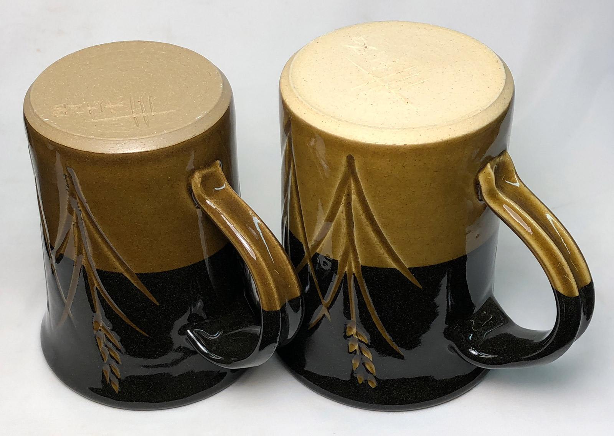
This picture has its own page with more detail, click here to see it.
The unglazed surface of the left piece has a sheen, it is a product of glass development during firing to cone 6. That body is a 50:50 mix of a cone 8 stoneware and a low fire earthenware red (a material that would normally be melted by this temperature). Together they produce this dense, almost zero-porosity ceramic. The unglazed surface on the right looks more like plaster, and it is absorbent, about 5% porosity. It is a mix of the same stoneware but with 50% ball clay. The refractory ball clay assures that the stoneware, which was already inadequately vitreous, is even more so. As you can imagine, the left piece is far stronger.
Vitreous cone 6 stoneware. How?
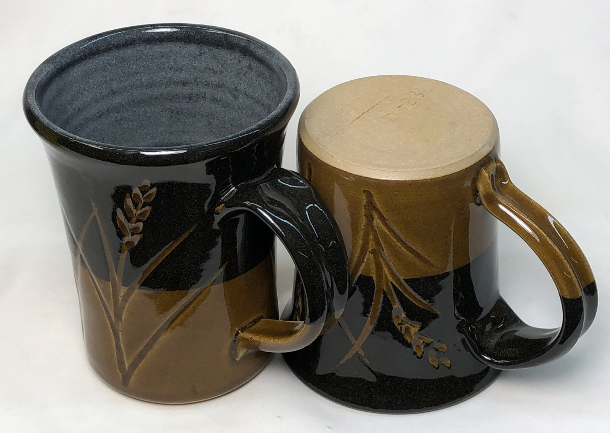
This picture has its own page with more detail, click here to see it.
Producing a zero-porosity cone 6 stoneware is not as easy as you might think. People expect stonewares to be plastic and fit glazes well. That means there needs to be lots of ball clay and silica in the recipe. These are refractory materials and they don't leave much room for the material that produces the vitrification: Feldspar. If the body does not need to be white there is another interesting approach: Use a red terra cotta material to supply plasticity and maturity. In this case I have made a 50:50 mix of a red-burning, super plastic, low fire clay (Plainsman BGP) with a refractory white-burning ball clay (Plainsman 3C). The result vitrifies to a zero-porosity, beautiful light tan body that even glistens in the light. One problem: Fired shrinkage. This body shrinks almost 17% from wet to fired.
A sculpture body fired from cone 1 (bottom) to 11 and 10R (top)
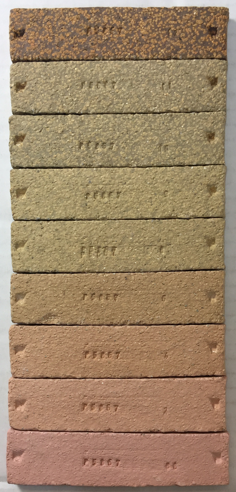
This picture has its own page with more detail, click here to see it.
Color, density, size and hardness all change as the firing temperature progresses. The color, for example, persists in zones, then changes suddenly. Notice that the colour of the grog particles contrasts more as the temperature increases. This body is completely vitrified at cone 10 and the grog is important for fired stability.
A red fireclay from cone 7 (bottom) to cone 10 and 10R
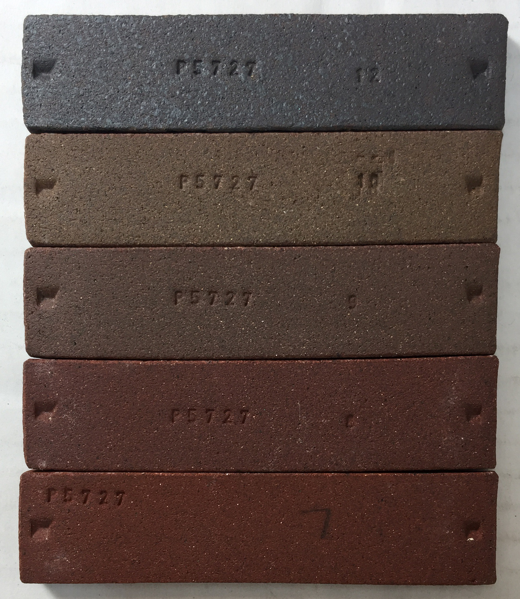
This picture has its own page with more detail, click here to see it.
Notice how much the color changes as the clay fires to greater maturity. This is Plainsman Fire-Red.
A terra cotta clay fired from cone 06 (bottom) to 4
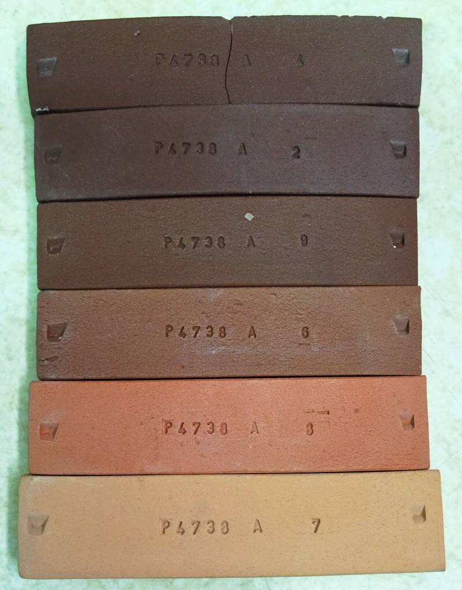
This picture has its own page with more detail, click here to see it.
Terra cotta clays mature rapidly over a narrow range of temperatures, showing dramatic changes in fired color, density and strength. These Plainsman BGP SHAB test bars are fired (bottom to top) at cone 06, 04, 03, 02, 2. At cone 06 (1830F/1000C) it is porous and shrinks very little. But as it approaches and passes cone 03 (1950F/1070C) the color deepens and then moves toward brown at cone 02 (where it reaches maximum density and strength). However, past cone 02 it becomes unstable, beginning to melt (as indicated by negative shrinkage). The second bar up, cone 04, is a good compromise: Adequate strength, good color and low shrinkage. This “single suitable temperature” is completely different than white burning low fire bodies, they are refractory.
Gradient test bars show how a range of temperatures affects a clay

This picture has its own page with more detail, click here to see it.
These are the fronts and backs of dust-pressed and fired gradient bars. They were done by Luke Lindoe in the I-XL brick lab to assess the firing history on two clay samples from Montana. After final drying, the bar width at each line is carefully recorded. They are fired horizontally in a furnace capable of reproducing linear thermal gradients along the length of the bar (equally spaced thermocouples enable control in each micro-zone). After firing, the widths are re-measured. The data produces a graph of fired shrinkage vs. temperature. Bars can also be visually inspected side-by-side for differences (color being the most obvious but also surface character). This method of comparatively assessing the effect of temperature on a clay test bar is popular in the brick industry (e.g. when a new mining of clay is being compared with a previous one). However, the SHAB test, although requiring more effort, provides more information and is more accurate (e.g. for pottery and porcelain).
Particle size and LOI determine behaviour of over-fired bodies
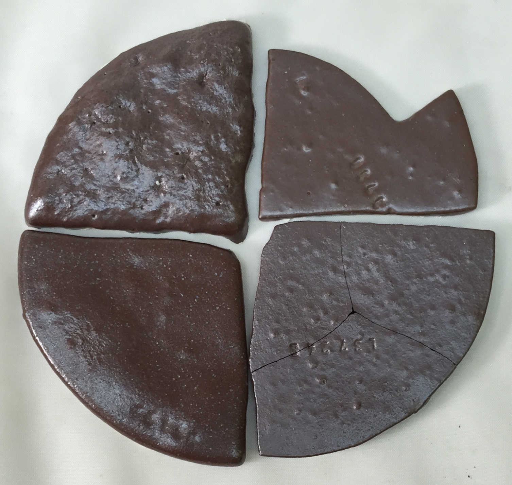
This picture has its own page with more detail, click here to see it.
These are four terra cotta body disks that have been fired to cone 10 reduction. The fluxing action of the iron has assisted to take them well along in melting. Notice that one is hardly bubbling at all, it is Redart clay that has been ground to 200 mesh (the lower right one is a body mix of 200 mesh materials also containing it). The upper left one is bubbling alot more. Why? Not just because it is melted more (in fact, the one on the lower left is the most melted). It is a body made from clays that have been ground to 42 mesh. Among the particles are larger ones that generate gases as they decompose. Yes, the particles in the others do the same, but their smaller size enables earlier decomposition and expulsion of smaller gas amounts distributed at many more vents. Some bodies cannot be fired to a point of zero porosity, they will bubble before they get there.
Non-vitrified bodies are best in many situations
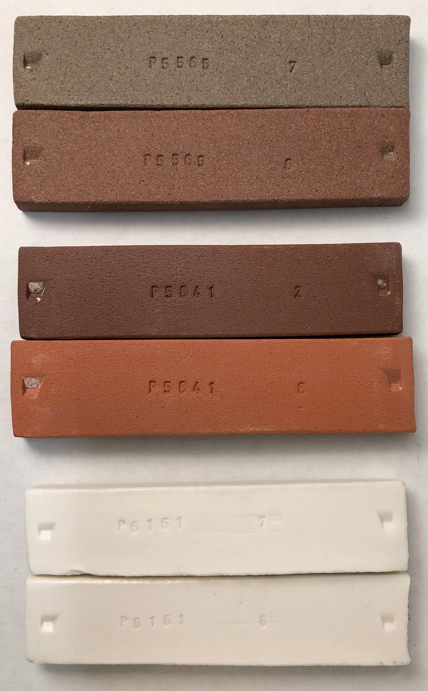
This picture has its own page with more detail, click here to see it.
The top two bars are the same stoneware fired to cone 6 (lower) and 7 (upper), having 4% and 2% porosity. The lower one is not vitrified, that is required for warm red (going higher turns it brown). Is the upper one more vitrified? No, it’s overfired and often bloats at this temperature. This clay begins melting aground 1% porosity.
The middle two bars are a terra cotta at cone 04 (lower) and 2 (upper). Is the top one vitrified? Although still having 2% porosity it is over-fired because it warps badly, bloats if fired only slightly higher and it’s LOI gases flood glazes with microbubbles and blisters. Is the bottom bar vitrified? No. And users don’t want it to vitrify, that’s what makes terracotta so stable and easy to use.
The bottom two bars are Polar Ice at cone 6 (lower) and 7 (upper). Both have zero porosity - strangely it fires whiter at cone 7 (at the cost of more warping without improvement in translucency). However cone 5 is actually better than both of these, translucency is almost as good, porosity is still zero and warping is minimal. In fact, if translucency is not needed cone 4 is even better (porosity is still well below 0.5%).
Getting the feldspar percentage right in an iron reduction clay body
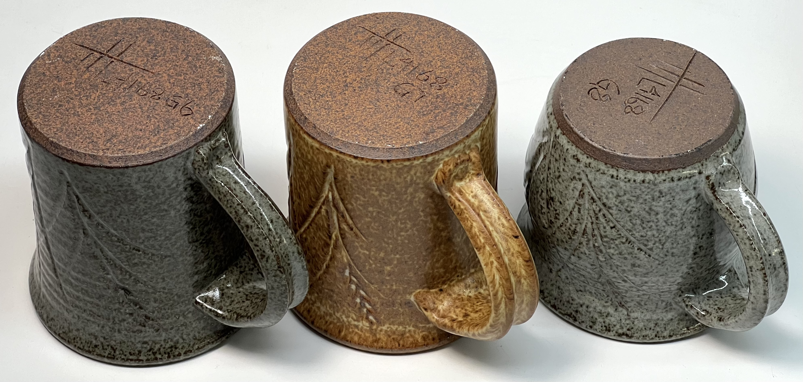
This picture has its own page with more detail, click here to see it.
We are trying to achieve a body sufficiently vitreous for functional ware but open enough to still have the characteristic variegated patching of light and dark brown (with reduction iron speck of course). Our base recipe is a two-part mix of red and buff fireclay. Mugs #1 and #2 have 12% Custer feldspar but #2 has more of the white clay (it’s more refractory and more plastic - so #2 has a porosity of 3.5% while #1 has 2.8%). #3 has the same clay mix as #2 but it uses 12% Nepheline Syenite - it’s greater fluxing power has turned the color a solid brown (and dropped porosity to 1.5%). The next step: We will target 3% porosity in #3 using a reduced percentage of Nepheline, likely about 9%. We have depended on 100% clay mixes in the past and the body has suffered variations in density (as measured by our SHAB test) and has seldom hit the 3% porosity target, having feldspar in the recipe will enable accurately controlling it in future (so we are more comfortable recommending it for light duty functional ware).
Test bars of different terra cotta clays fired at different temperatures

This picture has its own page with more detail, click here to see it.
Bottom: cone 2, next up: cone 02, next up: cone 04. You can see varying levels of maturity (or vitrification). It is common for terra cotta clays to fire like this, from a light red at cone 06 and then darkening progressively as the temperature rises. Typical materials develop deep red color around cone 02 and then turn brown and begin to expand as the temperature continues to rise past that (the bottom bar appears stable but it has expanded alot, this is a precursor to looming rapid melting). The top disk is a cone 10R clay. It shares an attribute with the cone 02 terra cotta. Its variegated brown and red coloration actually depends on it not being mature, having a 4-5% porosity. If it were fired higher it would turn solid chocolate brown like the over-fired terra cotta at the bottom.
These two pieces will not mature to the same degree in a firing
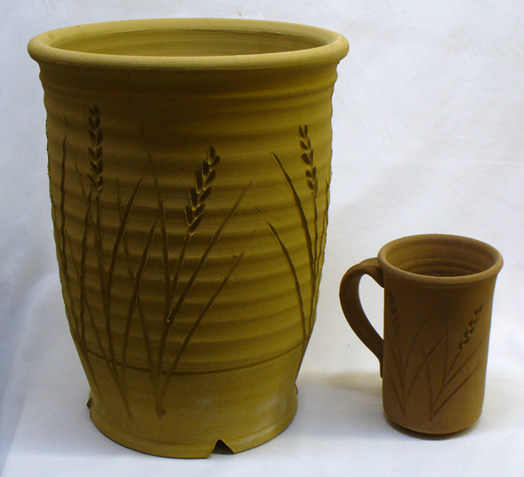
This picture has its own page with more detail, click here to see it.
Soak the firing 30 minutes and the mug would mature throughout. But not the planter. Soak 2 hours for the planter and the mug may over-mature and bloat or warp. This is a troublesome issue with electric kilns. Furthermore, they employ radiant heat. That means that sections of ware on the shady side (and the under sides) will never reach the temperature of those on the element side - no matter how long the firing is held at temperature.
How much porcelain flux is too much?
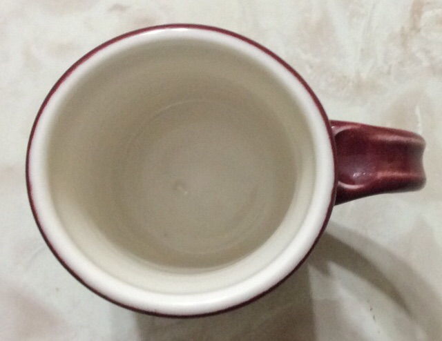
This picture has its own page with more detail, click here to see it.
A porcelain mug has pulled slightly oval because of the weight of the handle. This happens in highly vitrified porcelains (e.g. translucent ones). The amount of feldspar or frit in the body determines the degree of maturity, the correct percentage is a balance between enough to get the maximum translucency and hardness but not so much that ware is deforming excessively during firing. This is Plainsman Polar Ice at cone 6, this degree of warp is acceptable and can be compensated for.
Cone 6 kaolin porcelain verses ball clay porcelain.
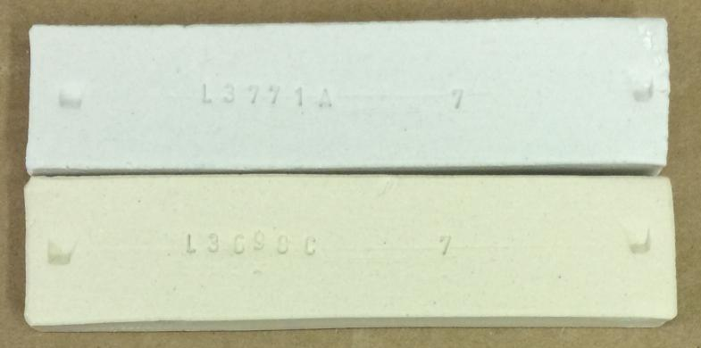
This picture has its own page with more detail, click here to see it.
Typical porcelains are made using clay (for workability), feldspar (for fired maturity) and silica (for structural integrity and glaze fit). These cone 6 test bars demonstrate the fired color difference between using kaolin (top) and ball clay (bottom). The top one employs #6 Tile super plastic kaolin, but even with this it still needs a 3% bentonite addition for plasticity. The bottom one uses Old Hickory #5 and M23, these are very clean ball clays but still nowhere near the whiteness of kaolins. Plus, 1% bentonite was still needed to get adequate plasticity for throwing. Which is better? For workability and drying, the bottom one is much better. For fired appearance, the top one.
Water-logging happens when a clay is underfired

This picture has its own page with more detail, click here to see it.
The cone 6 glaze is well developed; it is not crazed. But the clay underneath is not vitreous. This crack happened when the mug was bumped. It is barely visible. But when the mug was filled with water, this happened. How fast? This picture was taken about 5 seconds later. If this were crazing, and this piece was in actual use, the clay would become completely waterlogged. Then one day, someone would put it in the microwave. Boom!
This being said, if the glaze never crazes, the foot ring is sealed and the piece never cracks, this mug could service for years.
Can a glaze act as a sealant?
Yes. But only if it fits.

This picture has its own page with more detail, click here to see it.
Left: Plainsman M340 fired to cone 6 where it achieves good density (about 2% porosity) and excellent strength. Fire it to 1% porosity and it will bloat and warp. So cone 6 is its practical optimal temperature. Being able to measure the 2% porosity demonstrates water penetration, albeit slow penetration. So glazes must fit to seal the surface.
Right: H550, a Plainsman body intended to mature at cone 10, but fired to cone 6 using the same glaze. The clay is much more porous. The piece was dropped and cracked (the crack runs diagonally down from the rim). It was then dipped into water for a few moments. Immediately the water penetrated and began to soak into the body (spreading out from the crack). If this glaze were to craze, the entire thing would be waterlogged in minutes. But it doesn’t craze. So, the piece would be usable (with a sealed foot ring of course).
Cone 2: Where we see the real difference between terra cottas and white bodies
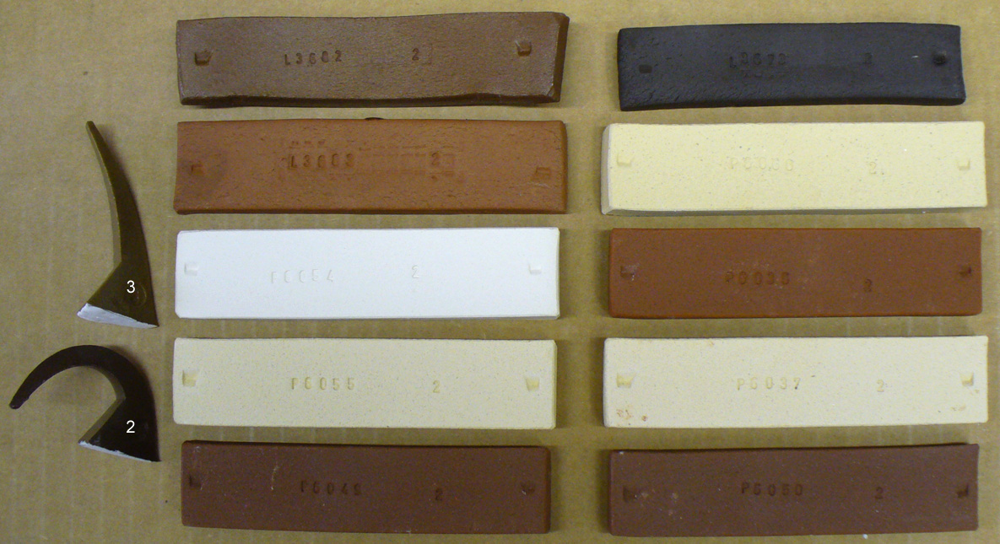
This picture has its own page with more detail, click here to see it.
The terra cotta (red earthenware) body on the upper left is melting, it is way past zero porosity, past vitrified. The red one below it and third one down on the right have 1% porosity (like a stoneware), they are still fairly stable at cone 2. The two at the bottom have higher iron contents and are also 1% porosity. By contrast the buff and white bodies have 10%+ porosities. Terra cotta bodies do not just have high iron content to fire them red, they also have high flux content (e.g. sodium and potassium bearing minerals) that vitrifies them at low temperatures. White burning bodies are white because they are more pure (not only lacking the iron but also the fluxes). The upper right? Barnard slip. It has really high iron but has less fluxes than the terra cottas (having about 3% porosity).
What happens when a terra cotta body is fired to cone 6
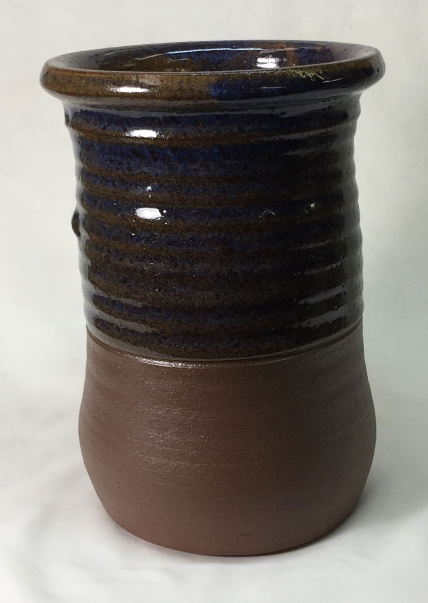
This picture has its own page with more detail, click here to see it.
It may not melt, but will certainly warp and blister/bloat (as show here). If there is inadequate kiln wash or silica sand it will also stick to the kiln shelf.
This pitcher is oozing a black goo after water sat in it overnight
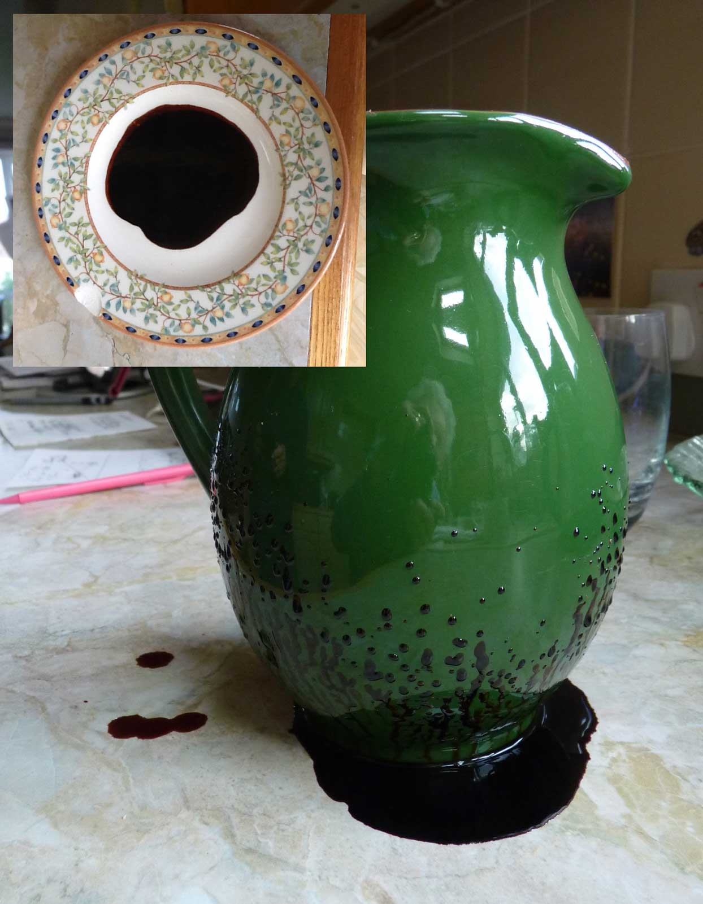
This picture has its own page with more detail, click here to see it.
Even after two weeks it is still sticky. This was purchased at an import store. What could this black goo be? It is likely a sealer that they use to make the porous clay water tight, perhaps an organic sugar. The clay is porous (and thus also weak) because they want to save energy by firing their kilns as low as possible. A water soluble sealer can be OK if the vessel is not used for storage. But it is not OK because there is another problem: The glaze is crazed. That is what is permitting the water to be absorbed into the body. That water is dissolving the sealer and bringing it out. There is yet another issue: The glaze could very well contain lead. Lead makes glazes melt low, so it is a great for saving energy. But not so great for producing safe ware.
Links
| Glossary |
Functional
A term used in ceramic to express the degree to which an item is safe and stands up to everyday use. Functionality embodies strength, hardness, resistance to acid attack and thermal shock, etc. |
| Glossary |
Vitrification
A process that happens in a kiln, the heat and atmosphere mature and develop the clay body until it reaches a density sufficient to impart the level of strength and durability required for the intended purpose. Most often this state is reached near zero p |
| Glossary |
Body Warping
Warping happens during the firing of ceramic ware when there is a high degree of vitrification and inadequate measures are taken during forming and firing to prevent it. Unexpected warping often happens with unstable shapes and over firing. |
| Glossary |
Porcelain
How do you make porcelain? There is a surprisingly simple logic to formulating them and to adjusting their working, drying, glazing and firing properties for different purposes. |
| Tests |
Shrinkage/Absorption Test
SHAB Shrinkage and absorption test procedure for plastic clay bodies and materials |
| Recipes |
L2000 - 25 Porcelain
Base 25x4 porcelain recipe |
 PayPal | No tracking, No ads, No paywall, No transient content! Just organized, concise information constantly updated and improved. Was this helpful? Consider supporting me. |
| By Tony Hansen Follow me on        |  |
Got a Question?
Buy me a coffee and we can talk 

https://digitalfire.com, All Rights Reserved
Privacy Policy